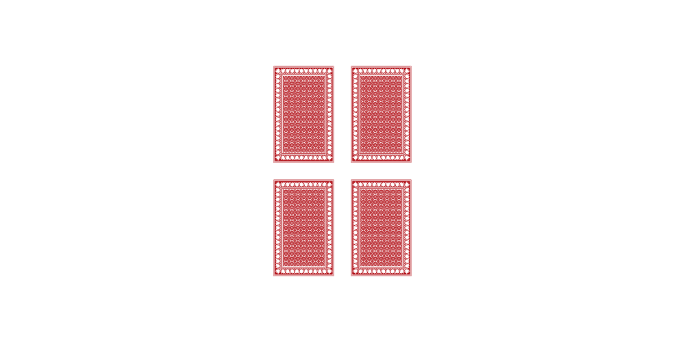
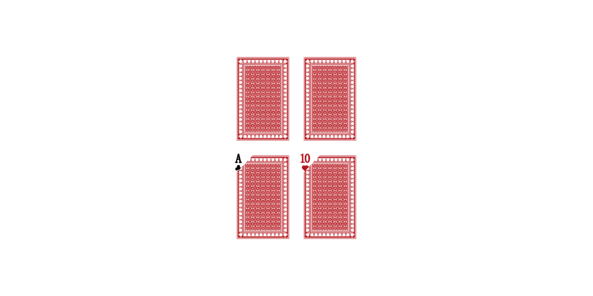
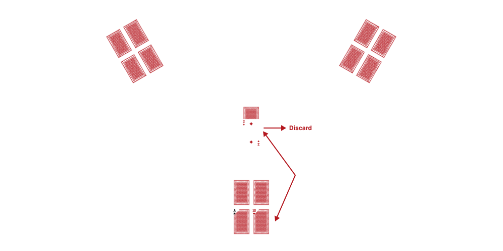
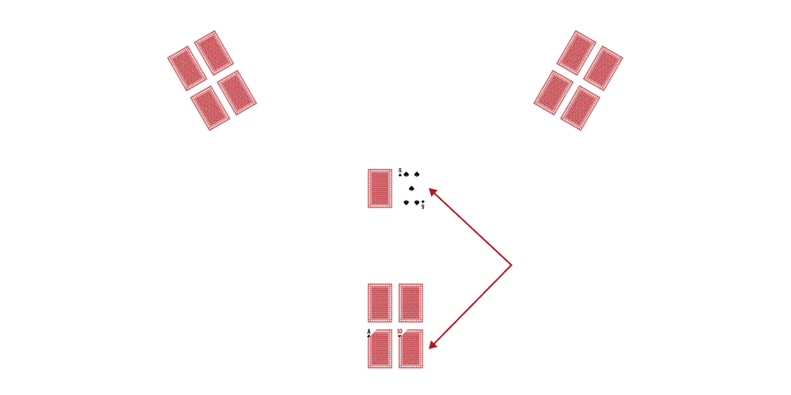
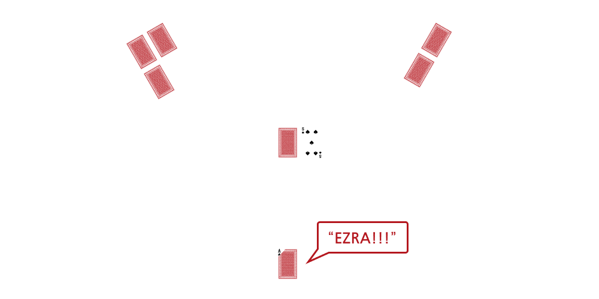
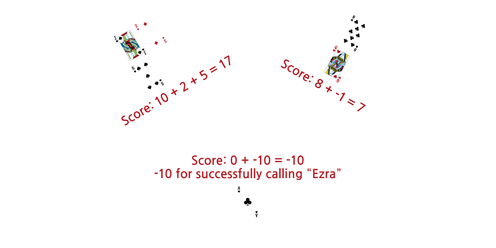

This game involves strategy, memory, and screwing over the other players.
Goal of the game is to end the game with the lowest total score of your cards. Scoring goes as follows:
Ace = 0 points
1-9 = 1-9 points
10, Jack, Queen, King = 10 points
Red Queen = -1
Instructions
Everyone starts with four cards that they place in a 2x2 grid in front of them.

Look at 2 of your own cards and remember the card and it's position in the grid. Place the cards back in their positions, facing down.

The first player must draw a card from the pile in the middle. They can decide to discard the card or replace it with one of their own (can replace any of your cards, known or unknown). Take turns going around the table.

On your turn, either draw a new card from the pile in the middle or take the top card from the discard pile. You can swap the card with one of your cards or discard. The other players may play one of their cards on top of the newly discarded card in order to lower their total points. If the player misremember their card and play a number card than the one on top of the pile, they have to take back the card and draw an additional card (can't look at it).

If you are confident that you have the lowest score out of the group, call “Ezra” on your turn only.
This counts as your turn and the rest of the players will each have one turn. During this time, players should try to either lower their own scores or increase the caller’s score. After everyone has taken their turn, the caller can decide if he wants to end the game and count points. Otherwise, he may have determined that the table has changed too much and can decide to play on.

All players get their game points added to their cumulative score total.
If the caller chooses to end the game and does have the lowest point total, they also get 10 points deducted from their score. If they don’t have the lowest point total, they get 5 points added to their score.

Keep playing new games until a player reaches a certain cumulative score across all games (e.g. 70). They are eliminated from participating for the remainder of the session.